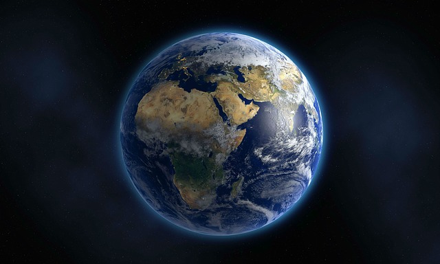

Mine yndlingsfakta om universet

Før jeg har skrevet et eneste ord innser jeg allerede at denne teksten
blir rimelig autismus maximus. Mine yndlingsfakta om universet av Henrik,
klasse 2b. Kan en artikkel bli mer karrierefremmende enn det her? Sannsynligvis ikke.
Heldigvis for meg er jeg ikke alene om å mene at universet er megaspennende.
Og skulle du tilhøre den sårbare minoritetsgruppen som synes dette blir litt
vel nerdete - så har du nå muligheten til å bli truffet hardt i ansiktet av en
ny og kilende begeistring for livets eget rammeverk.
Men, før vi setter i gang - hva er egentlig universet? Wikipedia definerer
universet som alt som eksisterer av tid og rom, og innholdet i rommet, herunder
materie og stråling. Det inkluderer planeter, måner, dvergplaneter, stjerner,
galakser, intergalaktisk rom, og all materie og energi.1
Universet er alt som er og alt som har vært.2
Uavhengig av om du tror på en kuplete jord, julenissen eller en syv dagers
jordbyggende herremann, er du altså en del av universet.
Sorte hull, solstormer og gammastråling. Koselige fenomener som potensielt
kan ødelegge alt vi holder nært og kjært uten forvarsel. Ubehagelige sannheter
som klistrer seg fast i hjernen som en solid og smakfull kvise i ansiktet.
Spørsmålet må nesten stilles: - Hvorfor skal vi bry oss om universet? Vi har
nok kviser fra før. I tillegg er universet så forbanna stort, gjør enkeltmennesket
så ubetydelig og fører ikke sjelden til en og annen eksistensiell krise.
Vil vi egentlig vite vår plass?
Heldigvis overvinner støtt og stadig menneskets nysgjerrighet vår frykt.
Vi sprenger grenser for å utvide forståelsen av verden rundt oss. Vi ønsker
å gjøre det ukjente til noe kjent. Kanskje er det nettopp denne horisontutvidelsen
som gir mennesket mening og retning i et tomt og ukjent univers.
Hmm, det var da voldsomt til introduksjon så langt. Du ville jo bare raske med
deg noen lettbeinte fakta om universet. Rart det der. Jeg har alltid likt å skrive
introduksjoner. Og jeg føler alltid et slags behov for å rettferdiggjøre det som
kommer i en tekst. Litt som en ansatt i matbutikken som ønsker å overbevise deg
om hvorfor det kan være lurt å handle mat - mens du er i butikken for å handle mat.
JEG HAR ALLEREDE TATT VALGET OM Å HANDLE MAT, KASSETRULS!
Her kommer de. Gjør deg klar. Mine yndlingsfakta om universet!
Størrelse
La oss starte med litt snacks om universets størrelse. Bare det observerbare
universet sies å være minst 90 milliarder lysår i diameter. Ja vel ja?
Skjønner vi egentlig hvor stort dette er?
For å illustrere avstanden kan
vi se til vår nærmeste stjerne utenfor vårt eget solsystem, Proxima Centauri.
Den er omtrent 4.2 lysår fra Jorden.
Hvor lang tid vil det ta for mennesket å karre seg til denne stjernen gitt
teknologien vi besitter akkurat nå? Altså vår NÆRMESTE
nabostjerne?
Over 6000 år!3
Går vi 6000 år tilbake i tid var vi fremdeles i steinalderen. Du kan se for deg
steinalder-Truls lande på en ukjent planet med et romskip – åpenbart bygget
av ren stein – og lure på hva søren han gjør, er, vil etc.
For vi må ikke
glemme at en slik romferd ville krevet flere hundre generasjoner av mennesker,
hvorav de fleste lever hele sitt liv på romskipet. Den tanken er like trist som
den er interessant spør du meg.
En annen god indikasjon på universets størrelse er bildene tatt av Hubble-teleskopet
omkring 2003. Forskere valgte seg ut et punkt på himmelen som fra jorden så
fullstendig mørkt og tomt ut. Punktet kan ses på bildet under. XDF står for extreme
deep field.
NASA; ESA; and Z. Levay, STScI; Moon Image Credit: T. Rector; I. Dell'Antonio/NOAO/AURA/NSF
Ikke rare greiene det der. Likevel tok Hubble-teleskopet hundrevis av bilder fokusert
på det samme mørke og tomme punktet. De enkelte bildene ble så satt sammen til
følgende bilde:
NASA; ESA; G. Illingworth, D. Magee, and P. Oesch, University of California, Santa Cruz; R. Bouwens, Leiden University; and the HUDF09 Team
Den tilsynelatende tomme delen av universet viste seg å inneholde rundt 10 000 galakser!4
GALAKSER! Melkeveien, vår egen galakse, inneholder omkring 300 milliarder stjerner.
Som allerede nevnt er avstanden mellom hver enkelt stjerne ubegripelig
store!
Det er lite annet å gjøre enn å legge seg trygt ned i fosterstilling og erkjenne
at universet sannsynligvis er langt større enn den menneskelige bevissthet klarer
å forestille seg.
Istid
Klima - et betent og spennende tema i vår tidsalder. Jeg skal trå varsomt og egentlig
bare nappe ut et par opplysninger om istider. Det er ikke i min interesse på nåværende
tidspunkt å få hverken Greta Thunberg eller verdens klimafornektere etter meg.
Heldigvis, for min del, så er vel ikke sistnevnte gjeng kjent for å være først ute
med å lese artikler hvor ordet 'fakta' er en del av tittelen.
En istid forekommer når temperaturen om sommeren ikke overstiger frysepunktet over en
lang periode. Dette er i grunn ganske logisk. Snø vil da falle på snølaget som ikke
har smeltet bort i løpet av sommeren og all snøen pakkes stadig tettere sammen.
Etter flere tusen år vil resultatet kunne være kilometerhøye isbreer.
Men hvorfor blir det så kaldt? Hva gjør at temperaturen ikke overstiger 0 grader
selv på sommeren?
Varmen på jorden avhenger av to ting - varmeoverføring fra solen og varmetap fra jorden
til verdensrommet.5
Varmetap til verdensrommet reguleres av atmosfærens innhold av drivhusgasser,
hvor karbondioksid er den dominerende. Varmeoverføringen til jorden bestemmes
naturlig nok av avstanden mellom jorden og solen, som igjen avhenger av jordens
bane rundt solen.
Så – jordens bane rundt solen. Det er her godbiten ligger. For selv om jordens
bane rundt solen er relativt stabil, så skjer det noe skremmende ca hvert 100 000 år.
Jupiter – som er solsystemets største planet – trekker da nemlig jorden delvis ut av
sin bane!
Jupiter har en masse som er omtrent 320 ganger større enn jordklodens masse.
Den har derfor en enorm gravitasjonskraft. Ved å trekke jordkloden mot seg vil avstanden
vår til solen øke og varmeoverføringen avtar. Det blir derfor kaldere på kloden og
forholdene legges til rette for en ny istid.6
Kollisjonskurs
Samtidig som du leser dette er det faktisk en annen galakse i universet – Andromeda -
som raser mot Melkeveien i en fart på 110 kilometer i sekundet. Og en vakker dag
kommer de to galaksene til å kollidere. Heldigvis for oss er dette fremdeles over
4000 milliarder år frem i tid. På dette tidspunktet er jorden for lengst blitt
ubeboelig og solen er i ferd med å gå tom for hydrogen å
brenne.7
En morsom detalj er likevel å hente i denne allerede så morsomme fremtidige hendelsen.
For selv om de to kolliderende galaksene består av milliarder av stjerner, så er sjansen
for at noen av stjernene kommer til å treffe hverandre lik 0.
Faktisk kommer det ikke
til å påvirke solsystemet vårt i det hele tatt annet enn at vi blir tildelt en ny
bane rundt det nye galaktiske senteret. Igjen er det naturligvis de enorme avstandene
mellom stjernene som er forklaringen.8
Regn
Den siste yndlingsfaktaen i arsenalet er relativt fersk og er hentet fra den britiske
dokumentarserien Planetene. Anbefaler forøvrig denne serien varmt om du har en tendens
til å bli like opphisset og besatt av universet som meg.
Planeten Saturn er solsystemets nest største planet. Her herjer solsystemets villeste
og mest ekstreme lynstormer. Disse stormene omgjør metangass til sot som så faller ned
mot kjernen av planeten. Sot er fine partikler av nesten rent karbon.
Første ledetråd – karbon.
Saturn er i likhet med Jupiter en gasskjempe. De har begge en diameter som er omtrent
ti ganger større enn jorden. Dette fører til at planetene har en sterk gravitasjonskraft
og innover mot kjernen oppstår det voldsomme trykk og høye temperaturer.
Andre ledetråd – voldsomt trykk og høye temperaturer.
Enkelte har kanskje lagt to og to sammen allerede. Karbonet, eller soten, utsettes for
et voldsomt trykk og høy temperatur mens det daler nedover mot planetens kjerne.
Soten omgjøres derfor til diamant og det oppstår diamantregn. DIAMANTREGN!
Ha det
Det var det! Mine yndlingsfakta om universet. Uansett om du trenger å gjenopplives
eller roe ned alle dine erigerte kroppsdeler så takker jeg deg for leserviljen.
Dette var første forsøk på å publisere en artikkel på min selvsnekrede hjemmeside.
Og har du faktisk lest alt frem til nå så bør jeg vel være storfornøyd med egen innsats.
Så – lærte du noe nytt og spennende i dag som du av en eller annen grunn har et
sykelig behov for å kommentere? Er kommentarfeltet på VG stengt for kvelden til
tross for at din velartikulerte og godt gjennomtenkte islamfiendtlige ytring allerede
er publiseringsklar? Ønsker du å kritisere eller modifisere noe av det jeg skriver?
Vil du gi meg konstruktiv ris eller ros? Vel, her finnes det ikke noe kommentarfelt,
så dine meninger om mine skriverier er omtrent like forsvinnende betydningsløse som
din egen plass i universet.
Ha det.
2. Carl Sagan, Cosmos (1980), p. 4 ↩
3. https://www.technologyreview.com/s/611485/this-is-how-many-people-wed-have-to-send-to-proxima-centauri-to-make-sure-someone-actually/ ↩
4. https://no.wikipedia.org/wiki/Hubble_Ultra_Deep_Field ↩
5. https://no.wikipedia.org/wiki/Klimaet_gjennom_jordhistorien ↩
6. https://www.livescience.com/what-causes-ice-ages.html ↩
7. https://en.wikipedia.org/wiki/Andromeda%E2%80%93Milky_Way_collision ↩
8. https://web.archive.org/web/20140701085917/http://www.nasa.gov/mission_pages/hubble/science/milky-way-collide.html ↩